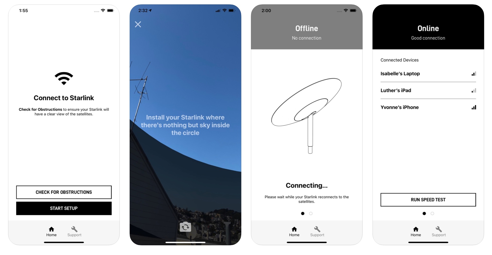

Flutter
Anna Kaczmarczyk
Numer indeksu:39578
Spis treści:
♦ Czym jest Flutter?
♦ Architektura Fluttera
♦ Kompilacja i instalacja Fluttera
♦ Język programowania Fluttera
♦ Dlaczego Flutter używa Darta?
♦ Najważniejsze cechy technolgii Flutter
♦ Zalety tworzenia aplikacji Flutter
♦ Ograniczenia Fluttera
♦ Obszar zastosowań
♦ Projekty wykorzystujące technologie Flutter
♦ Czy Flutter ma jakąś konkurencję?
♦ Zainteresowanie Flutterem
♦ Podsumowanie: Kiedy używać Fluttera?
Czym jest Flutter?
Architektura Fluttera
Framework Flutter składa się z:
- Dart
- Flutter Engine
- Biblioteka podstawowa
- Widgety jako wizualne bloki aplikacji

Kompilacja i instalacja Fluttera
Instalacja:
https://flutter.dev/docs/get-started/install
- pobieramy plik .zip lub clonujemy z GitHub’a (ok. 1 GB)
- folder, do którego został rozpakowany bądź pobrany projekt dodajemy do zmiennych środowiskowych
- w konsoli odpalamy komendę: flutter doctor

Język programowania Fluttera

Dlaczego Flutter używa Darta?
- Dart obsługuje zarówno kompilację: dokładnie na czas i kompilację z wyprzedzeniem
- Dart jest zorientowany obiektowo
- Dart to produktywny i przewidywalny język
- Pisania komponentów wielokrotnego użytku dla interfejsu użytkownika
- Asynchroniczne i oparte na strumieniu funkcje w Dart
Najważniejsze cechy technologii Flutter
-
✶Szybki rozwój
✶Ekspresyjny i elastyczny interfejs użytkownika
✶Natywność
Zalety tworzenia aplikacji Flutter
-
✶Jedna baza kodu dla wszystkich platform
✶Zasada „It's all Widgets” daje niezliczone możliwości
✶Bogate biblioteki
✶Szybkie testowanie z gorącym przeładowaniem
✶Kompatybilność
✶Własny silnik renderujący
✶Niestandardowy interfejs użytkownika
Ograniczenia Fluttera
-
✶Duży rozmiar pliku ze względu na widżety
✶Kompleksowa aktualizacja
✶Ograniczony zestaw narzędzi i bibliotek
✶Nowa technologia
✶Problemy z iOS
Obszar zastosowań
- Życie społeczne
- Fotografia
- Zdrowie
- E-commerce
- Muzyka
- Kultura
- Sport
- Edukacja
Projekty wykorzystujące technologie Flutter
Reklamy Google

Alibaba

SpaceX
Groupon
Phillips HUE

Watermaniac

eBay Motors

Czy Flutter ma jakąś konkurencję?
✶ React Native ✶ Xamarin
Zainteresowanie Flutterem

Podsumowanie:
Kiedy używać Fluttera?
✶Gdy potrzebujemy szybkiej aplikacji lub która w przyszłości będzie dalej rozwijana ✶Gdy potrzebujmy złożonego interfejsu użytkownika ✶Kiedy potrzebujemy dobrej wydajności swojej aplikacji ✶Kiedy jesteśmy pod poważną presją czasu